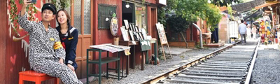

철길 마을
마을 소개
마을의 유래
볼거리
찾아오시는 길
주변 맛집
빵집
간장게장
중국음식점
횟집
주변 여행지
은파호수공원
초원사진관
월명공원
진포해양공원
도움마당
교통정보
주변 주차장
자료실
자료마당

공지사항
군산의 자랑 철길마을 축제
2023.10.26
거리 전시회에 초대합니다
2023.10.10
먹거리 장소 소개
2023.10.05
꽃 축제에 오신 당신을 환영합니다
2023.09.18
갤러리
실감형 영상 전시
원격 유물/콘텐츠 진단
링크1
링크2
링크3
링크4
경암동 철길마을에 오신 것을 환영합니다
편안하고 옛 멋을 느낄 수 있는 철길 마을
영화 '남자가 사랑할 때' 촬영지
군산의 자랑 철길마을 축제 개최
철길마을 축제는 과거의 기억과 현재의 삶, 그리고 미래를 위한 여정길입니다. 일제강점기 저항과 당시를 살았던 사람들과 현재를 살아가는 사람들의 시간과 공간적 만남을 통해 진취덕 열정을 만들어내는 축제입니다.
닫기